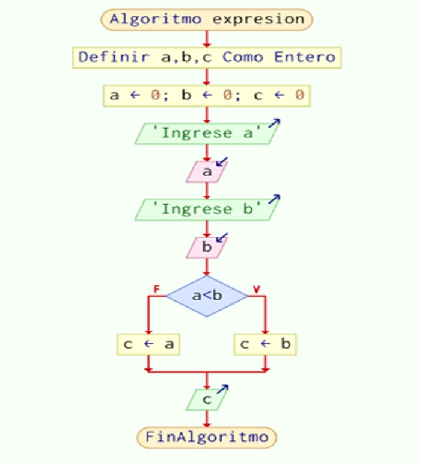
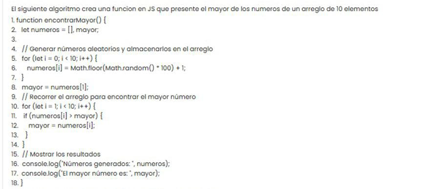
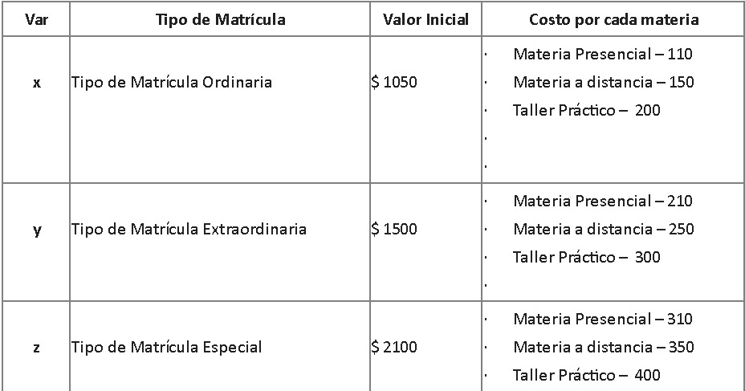
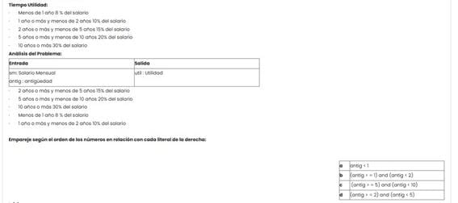

🤓 Verificar si un número es Par o Impar 🤓
function esPar(x) {
1. let r = ""
2. if (x % 2 == 0) {
3. r = " Es Impar"
4. } else {
5. r = " Es Par"
6. }
7. console.log(r)
}
¿Cuál línea hace que el algoritmo no funcione correctamente?
Analice el diagrama de flujo

¿Cuál es la principal diferencia entre una estructura condicional simple y una estructura condicional compuesta?
Al analizar un problema, ¿por qué es importante definir claramente la entrada y la
salida esperada?
¿Qué se entiende por "mejora continua" en el contexto de desarrollo de software?
. Si tienes la función funcion valor=Suma(a, b) valor= a + b fin funcion, ¿qué hará si
la llamas como resultado=Suma(3, 7)?
¿Cuál es la salida de esta función si llamamos a valor=Cuadrado(4)?
funcion valor=Cuadrado(a) valor= a * a fin funcion
Analice el codigo y responda
function fibonacci(n) {
let a = 0, b = 1, c;
if (n === 0) return a;
for (let i = 2; i <= n; i++) {
c = a + b;
a = b;
b = c;
}
return b;
}
console.log(fibonacci(6));
Analice el codigo y responda
12. function contarHastaCinco() {
for (let i = 1; i <= 5; i++) {
console.log(i);
}
}
contarHastaCinco();
¿Cuál es la función principal de los paréntesis en una expresión lógica que contiene
operadores AND y OR?
. En un sistema de cálculo de horas trabajadas, si un empleado trabaja 8 horas
diarias durante 5 días, ¿cuántas horas en total trabajó en la semana?
Analice el pseudocódigo y responda

Indique la linea o lineas que hace el algoritmo no funcione correctamente
Seleccione una:
En lógica de programación, ¿qué operador tiene mayor prioridad al evaluar una expresión condicional compleja?
¿Qué es una variable en programación?
¿Cuál es el objetivo de la optimización de algoritmos?
Si tienes la siguiente función: funcion valor=Cuadrado(a) valor= a * a fin funcion, ¿qué se
obtiene al llamarla con valor=Cuadrado(5)?
¿Cuál es la salida si llamamos a la función valor=Resta(10, 4)?
funcion valor=Resta(a, b) valor= a - b fin funcion
Analice el codigo de js en la imagen y seleccione según corresponda
function imprimirCuadrados(n) {
for (let i = 1; i <= n; i++) {
console.log(i * i);
}
}
imprimirCuadrados(3);
Analice el codigo de js en la imagen y seleccione según corresponda
function contarRegresivamente(n) {
for (let i = n; i >= 1; i--) {
console.log(i);
}
}
contarRegresivamente(4);
¿Cuál de las siguientes técnicas es fundamental para el desarrollo de un modelo
abstracto?
¿Qué sucede si no se respetan las prioridades entre operadores lógicos en una expresión
condicional?
¿Cuál de las siguientes afirmaciones es verdadera sobre el uso de operadores lógicos en
estructuras condicionales?
Se necesita desarrollar una aplicación para matriculación en línea, de una
institución educativa. Tomando en cuenta algunas características particulares

Al costo total de la matrícula de un estudiante; se debe aplicar un impuesto de 15%
adicional del subtotal generado.
Casos a Resolver:
x. El costo total de matrícula de un estudiante en período ordinario, quién ha seleccionado
1 materias presenciales, 2 materias a distancia y 4 talleres prácticos
y. El costo total de matrícula de un estudiante en período extraordinario, quién ha
seleccionado 2 materias presenciales, 2 materias a distancia y 4 talleres prácticos.
z. El costo total de matrícula de un estudiante en período especial, quién ha seleccionado 5
materias presenciales, 3 materias a distancia y 5 talleres prácticos.
En un restaurante, cada plato tiene un costo de $12. Si un cliente pide 3 platos, ¿cuál será
el costo total de su pedido?
Si un estudiante debe cursar 3 materias en el semestre, y cada una requiere 4 horas de
estudio semanales, ¿cuántas horas en total necesitará estudiar en una semana?
¿Cuál de los siguientes NO es un tipo común de estructura de control en un algoritmo?
¿Qué resultado produce esta función al llamarla con Multiplicacion(4, 5)?
funcion Multiplicacion(a, b) escribir a * b fin funcion
Seleccione una:
function sumaImpares(n) {
let suma = 0;
for (let i = 1; i <= n; i += 2) {
suma += i;
}
return suma;
}
Seleccione una:
function sumarPares(n) {
let suma = 0;
for (let i = 0; i <= n; i++) {
if (i % 2 === 0) {
suma += i;
}
}
return suma;
}
¿Qué operador lógico se utiliza para evaluar si dos o más condiciones son
verdaderas al mismo tiempo en una estructura condicional?
En una empresa de deliveries, cada entrega tiene un costo fijo de $10 y un costo
variable de $2 por cada kilómetro. ¿Cuál será el costo total de una entrega a 5 km de
distancia?
El siguiente algoritmo presenta la suma de los dígitos de cualquier numero entero
Indique la linea o lineas que hace el algoritmo no funcione correctamente
¿Cuál es el propósito principal de la abstracción Entrada-Proceso-Salida en el desarrollo de
software?
¿Qué se entiende por análisis de requerimientos en el contexto de la programación?
¿Cuál es una ventaja de utilizar expresiones lógicas compuestas en una estructura
condicional?
¿Cuál de las siguientes afirmaciones sobre la complejidad algorítmica es correcta?
¿Cómo se define una función que muestra un mensaje en la consola sin devolver un valor?
¿Qué palabra clave se utiliza para devolver un valor en una función con retorno en
PSeInt?
Seleccione una:
function multiplicar(n) {
let resultado = 1;
for (let i = 1; i <= 10; i++) {
resultado *= n;
}
return resultado;
}
Un repartidor debe entregar un paquete en 3 diferentes ubicaciones. Si el tiempo promedio
de entrega en cada ubicación es de 15 minutos, ¿cuánto tiempo total le tomará hacer las
entregas?
¿Cuál de las siguientes opciones describe un pseudocódigo?
Dado el siguiente diagrama de flujo, siga la secuencia lógica de las instrucciones e
indique cuál de las siguientes salidas es la correcta respecto a todos los valores que van
tomando las variables: A, B, C.
¿Cuál es la función principal de los paréntesis enuna expresión lógicaque contiene
operadores AND y OR?
¿Qué significa que una variable tenga "ámbito local" en un programa?
En la metodología de Entrada-Proceso-Salida (E-P-S), ¿qué describe mejor la fase de
"Proceso"?
Seleccione una:
function verificarPrimo(num) {
if (num <= 1) return false;
for (let i = 2; i < num; i++) {
if (num %i === 0) return false;
}
return true;
}
console.log(verificarPrimo(7));
Una tienda ofrece un descuento del 20% en un producto cuyo precio original es de $50.
¿Cuál será el precio final después del descuento?
¿Qué se entiende por "corto circuito" en una evaluación de una expresión condicional
compuesta con operadores lógicos?
¿Cuál es el propósito de un bucle en la programación?
¿Qué técnica de abstracción es útil al dividir un problema en múltiples subproblemas para
su resolución en un programa?
¿Qué característica NO pertenece a los algoritmos?
¿Cuál es el principal objetivo de la depuración (debugging) en programación?
¿Cuál es el propósito principal de una constante en un programa?
¿Cuál es la forma correcta de almacenar el resultado de una función con retorno?
¿Cuál es la diferencia principal entre un algoritmo iterativo y uno recursivo?
Seleccione una:
function sumaPares(n) {
let suma = 0;
for (let i = 0; i <= n; i++) {
if (i % 2 === 0) {
suma += i;
}
}
return suma;
}
let resultado = sumaPares(6);
¿Cuál es la diferencia principal entre el operador AND y el operador OR en una expresión condicional?
Calcular la utilidad que un trabajador recibe en el reparto anual de utilidades si este se
le asigna como un porcentaje de su salario mensual que depende de su antigüedad en la
empresa de acuerdo con la sig. Tabla.

El siguiente algoritmo verifica si un número es Par o Impar
function esPar(x){
1. let r = ""
2. if (x % 2 == 0) {
3. r = " Es Impar"
4.}else{
5. r = " Es Par"
}
6.console.log(r)
}
0
¿Cuál línea o líneas hafcen que el algoritmo no funcione de manera correcta?
Analice las siguientes líneas de programa y escriba ¿cuál es la respuesta que genera m?
¿Qué se entiende por una condición anidada en lógica de programación?
Si un viaje en tren cuesta $5 por persona y un grupo de 6 personas toma el tren, ¿cuál será
el costo total del viaje?
En un diagrama de flujo, ¿qué figura geométrica se utiliza para representar una decisión o condición?
En el desarrollo de modelos abstractos, ¿cuál es el primer paso para resolver un problema?
¿Qué sucede si intentamos devolver un valor en una función sin retorno?
¿Cuál es la forma correcta de definir una función que no devuelve un valor en PSeInt?
Analice el codigo y responda el literal que encaje mejor con la imagen
function contarHastaCinco() {
for (let i = 1; i <= 5; i++) {
console.log(i);
}
}
contarHastaCinco();
Analice el codigo y responda a que literal le corresponde la imagen
function SumaDivisores(num) {
let suma = 0;
for (let i = 1; i < num; i++) {
if (num % i === 0) {
suma += i;
}
}
return suma;
}
SumaDivisores(6);